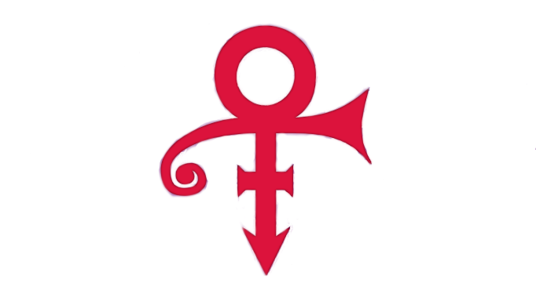
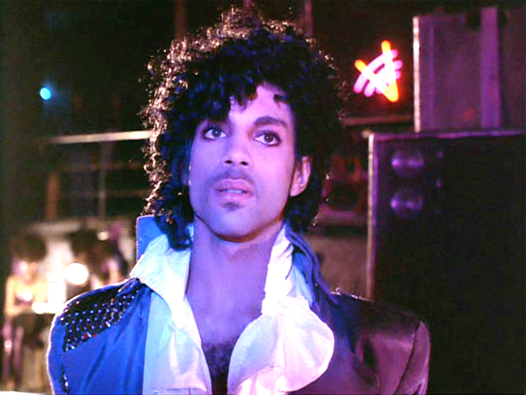
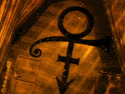

Life Achievement

Zijn Levenswerk
Roger Nelson, beter bekend onder zijn artiestennaam Prince (Minneapolis, 7 juni 1958 - Chanhassan, 21 april 2016), was een Amerikaans popartiest in de funk- en rocktraditie.
Naast zanger, componist, gitarist, toetsenist en bassist was hij danser, platenproducer, filmregisseur en acteur.
Prince stond bekend als een zeer productieve workaholic en een vernieuwer in de popmuziek.
Hij verkocht bij leven meer dan honderdvijftig miljoen singles en albums, won zeven Grammy Awards, een Oscar voor het lied Purple Rain en een Golden Globe.
Een veelgebruikte bijnaam is His Royal Badness (Zijne Koninklijke Slechtheid), een verwijzing naar zijn seksueel getinte teksten.

